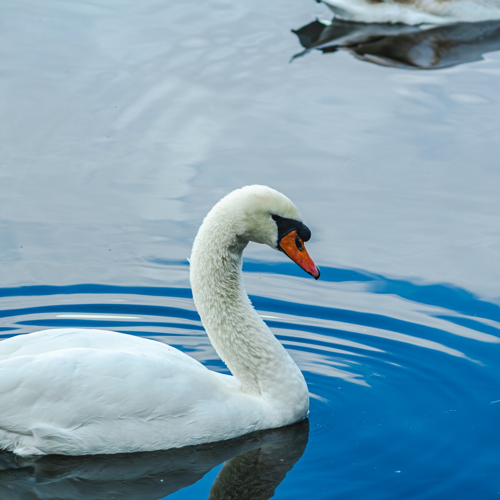
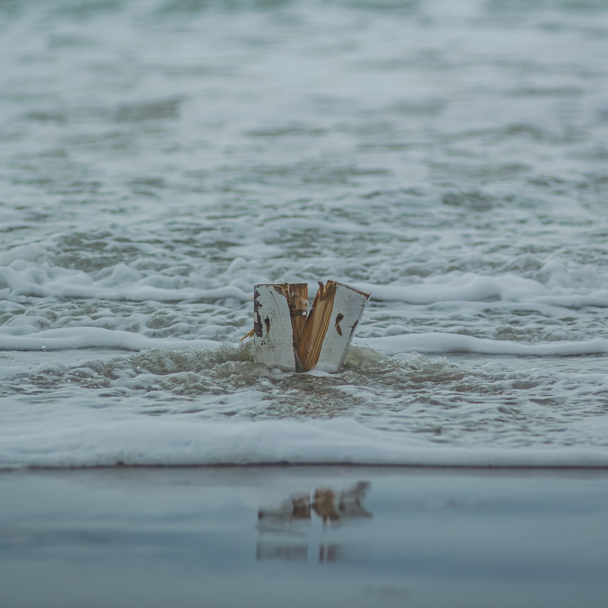
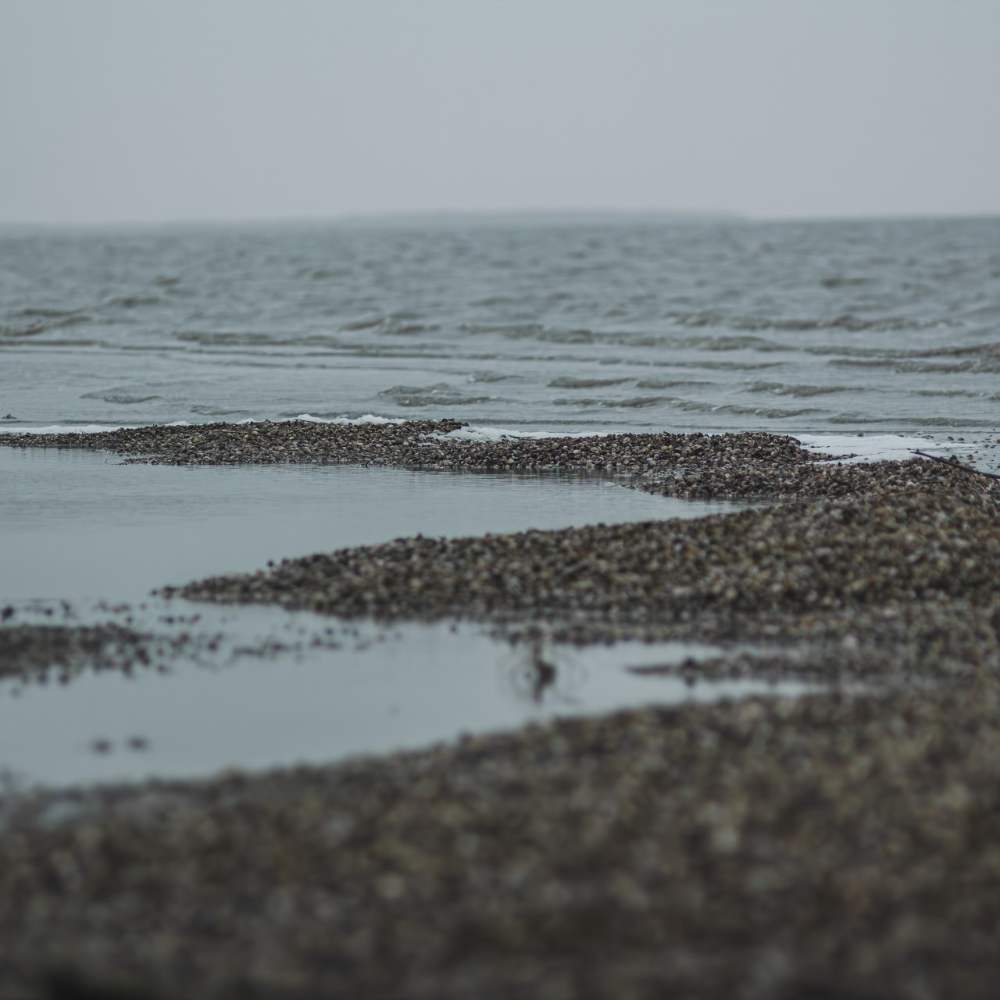
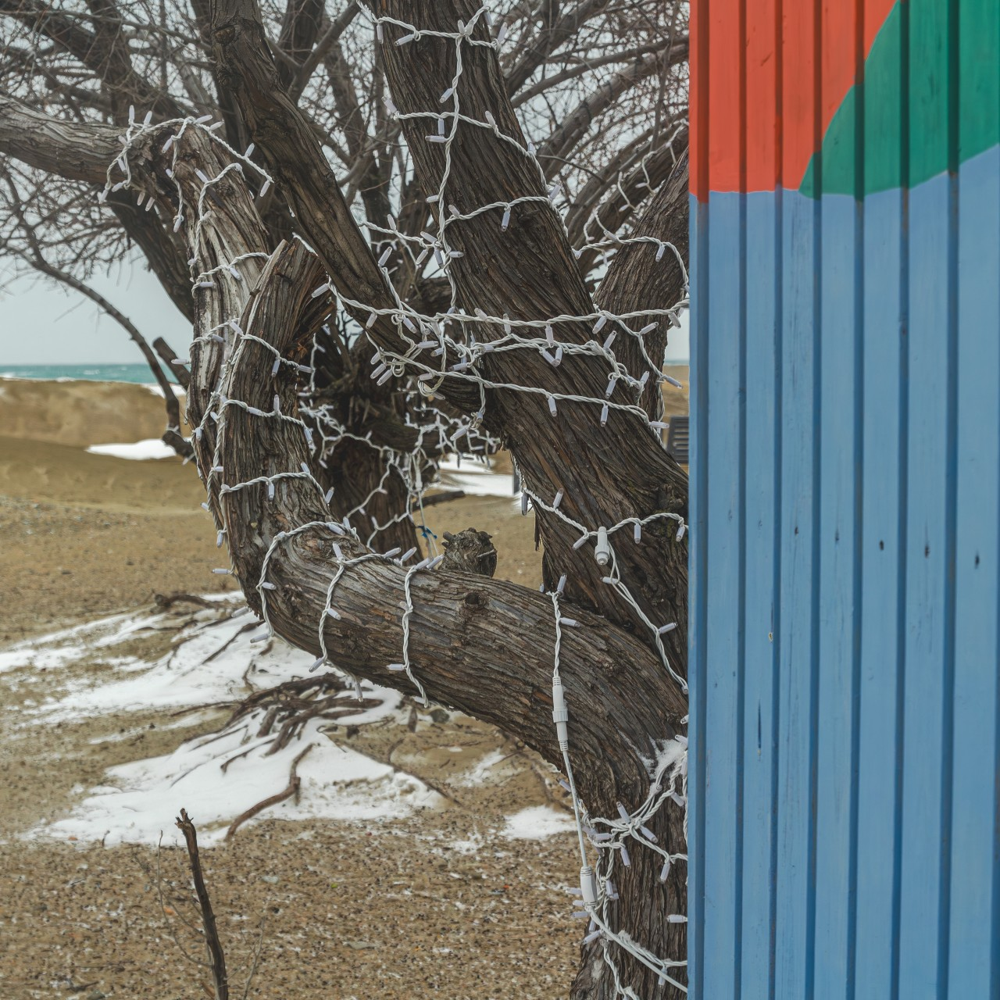
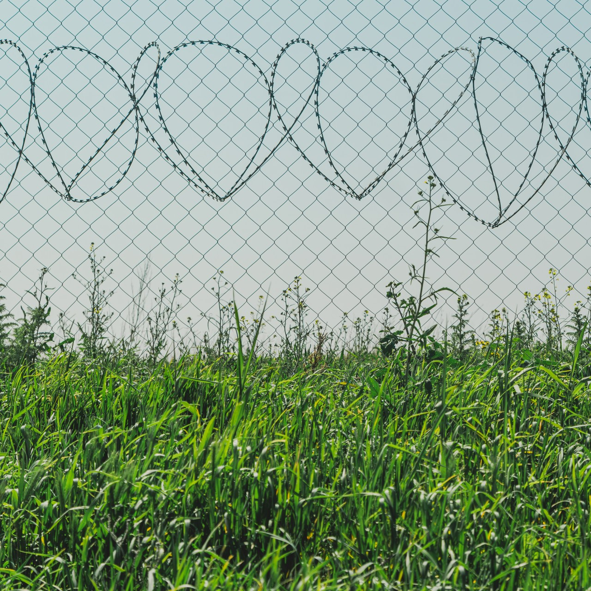
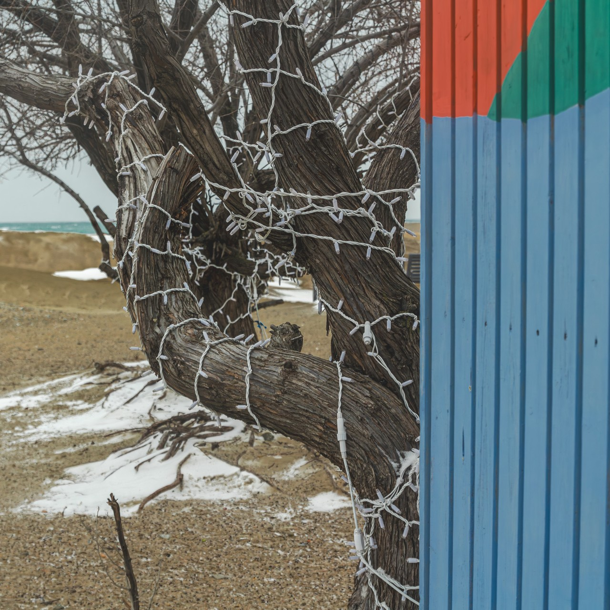
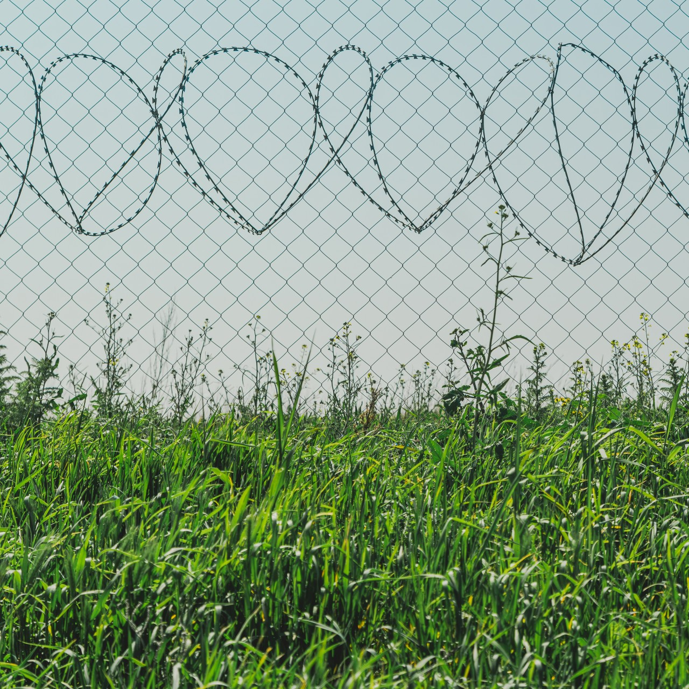

Статья
Серьезно?
Странная статья про странного человека, в странной газете
Да нормальный человек, на самом деле, просто себя не любит
-
фотки
Мазня
   



-
Писульки
Мечты
Это человек, который ценит знания и стремится к постоянному развитию. Он обладает упорством в достижении целей и находит вдохновение в возможности приносить пользу другим, возможно, через изучение новых технологий или творчество. Его интересы разнообразны – от изучения веб-разработки и научных статей до фотографии и поиска информации. Он проявляет верность своим принципам и готов прилагать усилия для достижения желаемого.
Это человек, который предпочитает стабильность и комфорт. Он не стремится к новым знаниям или вызовам, а довольствуется тем, что есть. Его интересы ограничены, и он не испытывает особой потребности в саморазвитии. Он может быть сдержанным и осторожным, избегая рисков и новых начинаний. Хотя он ценит верность своим принципам, его главная цель – сохранить то, что ему дорого, и избежать изменений.